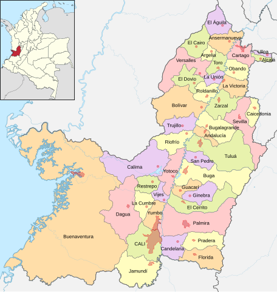

VALLE DEL CAUCA

El Valle del Cauca es un departamento situado en el suroeste de Colombia, conocido por su rica producción agrícola, su diversidad cultural y su importancia histórica. Su capital es Cali, una de las ciudades más grandes y vibrantes del país, famosa por su ritmo, su salsa y su ambiente festivo.
Geografía
El Valle del Cauca se encuentra en una región de valles fértiles entre la Cordillera Occidental y la Cordillera Central de los Andes. El río Cauca, uno de los más importantes de Colombia, atraviesa el departamento y proporciona un recurso vital para la agricultura y la industria. El clima en la región varía desde cálido hasta templado, lo que favorece una gran variedad de cultivos.
Historia
La historia del Valle del Cauca es rica y diversa. Antes de la llegada de los españoles, la región estaba habitada por comunidades indígenas como los calimas y los quimbayas. Con la colonización en el siglo XVI, los españoles establecieron asentamientos y comenzaron a desarrollar la agricultura, especialmente la caña de azúcar.
A lo largo de los siglos, el Valle del Cauca se convirtió en un importante centro de producción agrícola y, durante el período de la independencia, fue escenario de diversas luchas y movimientos revolucionarios.
Cultura
La cultura del Valle del Cauca es una mezcla de tradiciones indígenas, africanas y españolas. La salsa es una parte fundamental de la identidad cultural de Cali, que es considerada la capital mundial de este género musical. La ciudad alberga numerosos festivales de salsa, como el Festival Mundial de Salsa, donde los bailarines muestran su talento y pasión.
Además, el Valle es conocido por sus festividades, como la Feria de Cali, que se celebra en diciembre y presenta desfiles, conciertos y actividades culturales.
Economía
La economía del Valle del Cauca es una de las más dinámicas de Colombia. La agricultura es un pilar fundamental, con cultivos de caña de azúcar, café, frutas y verduras. El departamento es uno de los principales productores de caña de azúcar del país, y la industria azucarera juega un papel crucial en su economía.
Además, la ciudad de Cali se ha convertido en un importante centro industrial y comercial, con un crecimiento significativo en sectores como la manufactura, la tecnología y los servicios.
Turismo
El Valle del Cauca ofrece una variedad de atractivos turísticos que atraen tanto a colombianos como a visitantes internacionales:
Cali:
Con su vida nocturna, parques, museos y el famoso barrio de San Antonio, que es un lugar ideal para disfrutar de la cultura local.
Parque Nacional Natural Farallones de Cali:
Un espacio protegido que ofrece rutas de senderismo y biodiversidad impresionante.
Buga:
Famosa por su Santuario del Señor de los Milagros, un importante lugar de peregrinación.
Rutas del azúcar:
En esta zona se pueden visitar fincas azucareras y aprender sobre el proceso de producción del azúcar.
Desafíos
A pesar de sus fortalezas, el Valle del Cauca enfrenta desafíos como la desigualdad social, la violencia y problemas de infraestructura en algunas áreas. Sin embargo, el departamento sigue siendo un punto clave en el desarrollo económico y cultural de Colombia.
SI DESEA VOLVER A LA PAGINA PRINCIPAL, DE CLICK AQUI